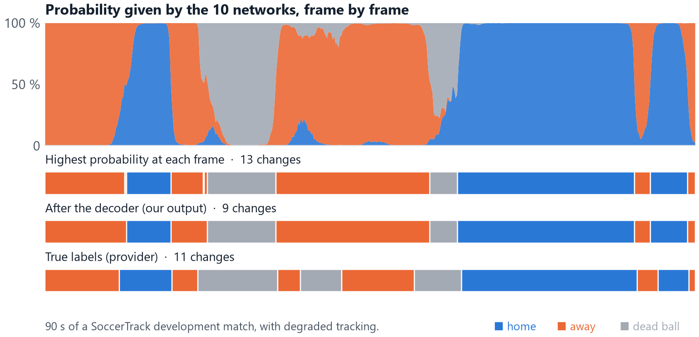
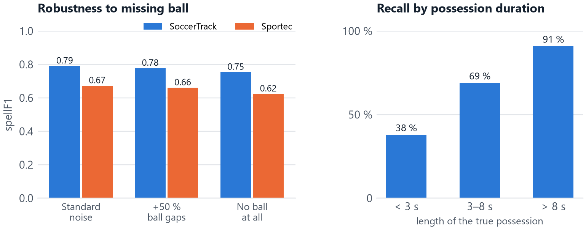

Football analytics · Hackathon · 37th of 759 · 2026
Ball possession from tracking
Who has the ball, frame by frame, when the tracking loses it 40% of the time: a set-based temporal network applied blind to a LaLiga match.

37 / 759final position, More than a Hack 2027
0.802spellF1 on two held-out public matches
0frames of the target match used for training or tuning
< 1 minto label the whole match on a laptop CPU
The problem
Label every frame of FC Barcelona – Athletic Club as home possession, away possession or dead ball, using automatic tracking where the ball is missing on about 40% of frames and player tracks keep breaking. No part of the match could be labelled, so the model had to learn elsewhere and run blind.
Key idea
Possession leaves a signature in collective movement even when the ball is not seen: the team with the ball stretches and advances, the other compacts and presses. The model reads that signature and uses the ball as one more input when it is there.
How it works
- Trackingautomatic, incomplete
- Features13 per player + 11 match-level, 5 Hz
- Modelset encoder + bidirectional TCN
- Ensemble10 networks, geometric mean
- Decoding3-state Viterbi → possessions
Design choices
- Teams as sets. A shared per-player encoder pooled per team, so broken tracks, slot order and identity switches do not matter.
- ±25 s of context with a bidirectional temporal CNN, to infer the owner across ball gaps.
- Auxiliary targets (where the ball is now, in 0.5 s and in 1 s) teach the network to track the ball implicitly.
- Training on 15 public matches whose tracking was deliberately degraded to look like the target's.
- Ten networks combined by geometric mean, then a 3-state Viterbi decoder turns probabilities into possessions.


About the data. Team MAD-R-ID: Felipe Andrés Cruz Méndez, Anton Rivera Evseeva and Miguel Ángel Castro Torreslanda. The public repository regenerates the submission.